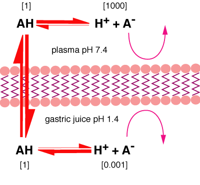

Ion trapping
Inside a body compartment, the ionisation of a drug is determined by the pH and pKa. Where the pH varies across a membrane, eg plasma pH 7.4 and gastric contents pH 2, the degree of ionisation will be different. Since only the unionised form can cross the membrane, it will diffuse down the concentration gradient to the other side of the membrane where most of it will become ionised and thus trapped. Thus a weak acid (such as aspirin) will move out of the gastric juice and into the plasma.
A weak acid will accumulate in a compartment with
high pH, a weak base will accumulate in a compartment with low pH. This can
be useful to increase the concentration of drugs in various sites, eg milk
pH 6.8, inflammatory exudate pH variable but acid, urine pH can be
altered as required.

Ion trapping of a weak acid (pKa 4.4 to make the arithmetic simple) encourages movement across the gastric lining. This can be important with aspirin like drugs.
| 3 Pharmacokinetics index |
| |
copyright
Massey University
|